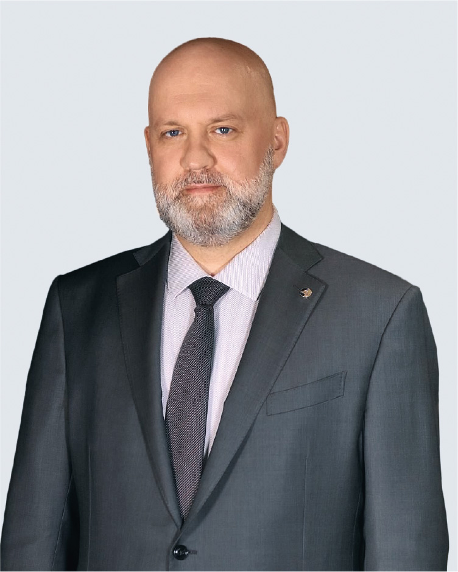

Годовой отчет 2022


Председатель Совета директоров ПАО «Селигдар»
Александр Александрович
ХРУЩ
Александр Александрович
ХРУЩ
«Селигдар» разработал целый комплекс инструментов реализации золота и постоянно дополняет список новыми каналами сбыта. Продажа золота, добываемого «Селигдаром», стала осуществляться и на Московской Бирже.